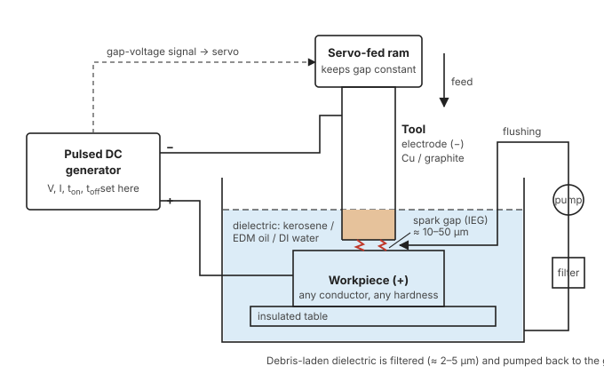
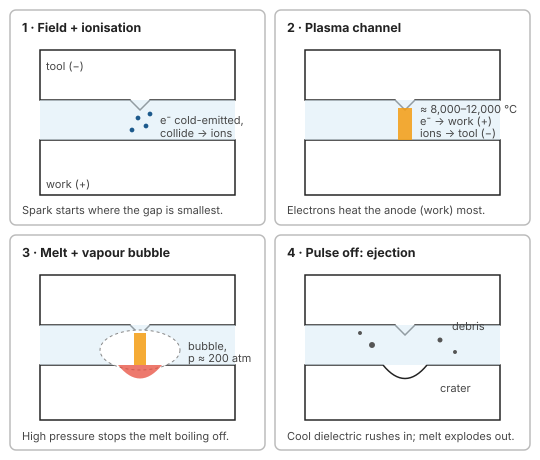

Unit 3 · Lesson 2 of 12 · ~15 min
EDM: what one spark actually does
Thousands of tiny sparks per second, each blasting a crater out of the workpiece. Learn the sequence once and you can explain EDM in any question.
Draw the EDM setup and explain the mechanism of material removal in six numbered steps, including why the workpiece erodes more than the tool.
Principle in two lines
Electric discharge machining (EDM) removes electrically conductive material by rapid, repetitive spark discharges between a shaped tool electrode and the workpiece. The two are separated by a small gap filled with a dielectric liquid. Each spark melts and partly vaporises a tiny volume, leaving a crater. Millions of overlapping craters reproduce the tool's shape in the work (Jain, p.127; Jagadeesha, §6.0–6.1).
It is a thermoelectric process: electrical energy becomes heat at the spark. There is no contact and no cutting force, so the work can be as hard as you like. It only has to conduct.

Basic requirements
- Tool and workpiece must both be electrically conductive.
- A small, steady gap must be held by a servo. Jain quotes 12–50 µm in operation; Jagadeesha gives 0.01–0.5 mm as the general range.
- Dielectric must flow through the gap to insulate, cool and flush.
- The power supply must deliver pulsed DC with controlled energy, duration and frequency.
- The dielectric must be filtered to remove debris.
The mechanism, one spark at a time

- Field concentrates. Pulsed DC (Jain gives a typical 80–100 V at about 5 kHz) is applied across the gap. The electric field is strongest where the gap is narrowest, at a surface high spot.
- Dielectric breaks down. Electrons are pulled from the cathode (cold emission) and accelerate towards the anode. They collide with dielectric molecules and knock out more electrons. Ionisation avalanches.
- Plasma channel forms. A narrow, highly conductive channel bridges the gap. Electrons stream to the anode, positive ions to the cathode. Their kinetic energy turns to heat. The channel reaches roughly 10,000 °C (Jagadeesha, §6.3).
- Melting under pressure. A small volume of both electrodes melts and some vaporises. The dielectric vaporises too, so pressure in the channel shoots up (Jain gives about 200 atm). That pressure stops the superheated melt from boiling away.
- Pulse off: collapse and ejection. The current stops, pressure drops instantly, and the superheated metal flashes to vapour and explodes out of the crater. Cool dielectric rushes in, quenches the debris into tiny spheres and flushes it away.
- Repeat. The dielectric deionises. The next spark strikes at the next-narrowest point. Craters spread over the whole face, and the servo feeds the tool to keep the gap constant. The cavity becomes a replica of the tool, slightly oversize.
EDM debris is a mix of irregular particles (melt that refroze) and hollow spheres (condensed vapour). That is direct evidence that both melting and vaporisation happen (Jain, p.127–128).
Why the work wears more than the tool
In normal (straight) polarity the tool is negative and the work positive. Electrons are light and arrive at the anode very fast, early in each short pulse, dumping concentrated heat into the work. Heavy positive ions are slower to reach the cathode tool. So in short pulses most of the heat lands on the work. Jain puts it simply: how much each electrode loses depends on the kinetic energy delivered by electrons (to the anode) and ions (to the cathode).
Reverse polarity (tool +, work −) is used for particular tool and work pairs, for example graphite electrodes on low-wear settings (Jagadeesha, §6.6.7). Tool wear never reaches zero, so roughing and finishing tools are often separate.
"Since electrons have far smaller mass than ions, they reach the anode (workpiece) quickly and deliver most of the spark energy there during short pulses. Hence with tool −ve and work +ve, the workpiece erodes much more than the tool."
Numbers worth remembering
| Quantity | Typical value | Source |
|---|---|---|
| Spark gap (IEG) | 12–50 µm in operation | Jain p.147 |
| Gap voltage | 80–100 V pulsed DC | Jain p.129 |
| Spark temperature | ~10,000 °C | Jagadeesha §6.3 |
| Channel pressure | ~200 atm | Jain p.130 |
| Volumetric MRR | 0.1–10 mm³/min per ampere | Jain p.154 |
| Accuracy | ±0.025 to ±0.127 mm; ±2.5 µm possible | Jain p.154 |
| Surface finish | 0.8–3.1 µm Ra; 0.18–0.25 µm on new machines | Jain p.155 |
| Small-hole aspect ratio | up to 100:1 with careful flushing | Jain p.154 |
Practise the answer
5 marksExplain the mechanism of material removal in EDM with a neat sketch.
Sketch: the setup above, plus a small inset of a plasma channel between tool (−) and work (+).
- Pulsed DC is applied across a small gap filled with dielectric. The field is highest at the narrowest gap.
- Electrons are cold-emitted from the cathode, collide with dielectric molecules and cause an ionisation avalanche.
- A conductive plasma channel forms. Electrons bombard the anode (work), ions the cathode (tool). KE becomes heat, ~10,000 °C.
- A small volume melts and partly vaporises. Dielectric vapour raises channel pressure (~200 atm), holding the superheated melt.
- At pulse-off the pressure collapses; the melt explodes out, leaving a crater. Fresh dielectric quenches and flushes the debris.
- The next spark occurs at the next-narrowest gap. The servo maintains the gap; overlapping craters reproduce the tool shape.
Add one line on polarity: work +ve erodes more because light electrons deliver energy to the anode faster than ions to the cathode.
Quick check
1. Where does the next spark strike?
- At the tool's centre
- At a random point
- At the narrowest gap
- Where dielectric flows fastest
The field is strongest where the gap is smallest, so breakdown happens there first. After that crater forms, the next-narrowest point takes over, which is why craters spread evenly.
2. What does the high pressure in the plasma channel do?
- Holds superheated melt from boiling
- Pushes the tool away upward
- Cools the crater walls quickly
- Raises the dielectric's breakdown voltage
Pressure (~200 atm) suppresses boiling during the pulse. When the pulse ends and pressure drops, the superheated melt flashes off explosively. That is the main ejection event.
3. In normal polarity, why does the work erode more than the tool?
- The tool is always much harder
- Dielectric always protects the tool surface
- The work has lower melting point
- Electrons heat the anode work faster
Light, fast electrons deliver energy to the anode (work +) early in the pulse; heavy ions reach the cathode (tool −) more slowly. Material hardness plays no part.
4. Hollow spherical particles in EDM debris come from…
- Broken bits of tool
- Condensed metal vapour droplets
- Carbon from cracked dielectric
- Abrasive added to dielectric
Vaporised metal condenses into hollow spheres; refrozen melt gives irregular particles. Together they show both vaporisation and melting occur.